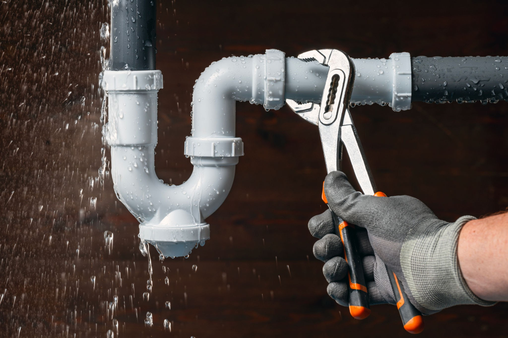
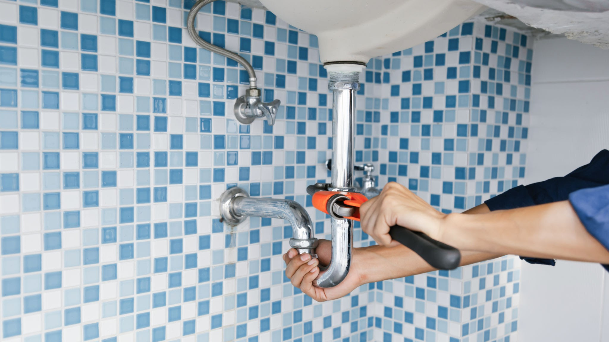
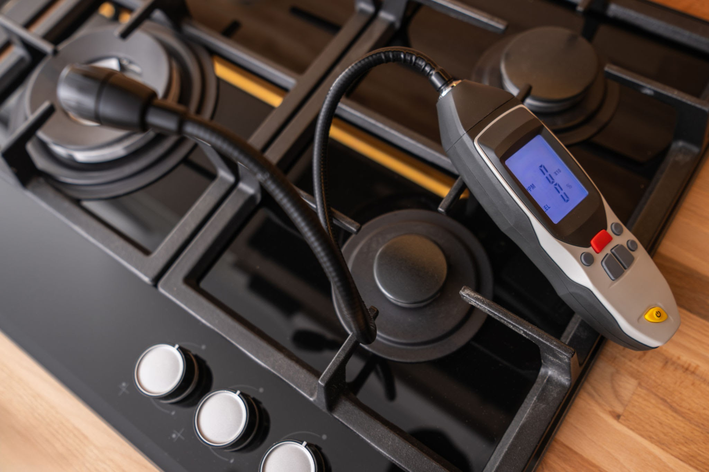

Our Professional Services
We handle everything from standard home leak repairs to comprehensive commercial utility modernizations. Look through our specific core specializations below.

Residential Fixes
Complete leak diagnostic inspection, modern faucet installation, pipe refitting, and general line troubleshooting.

Commercial Repairs
High-pressure line clearing, commercial grade backflow tracking, industrial drainage, and complete multi-tenant layout maintenance.

Gas Safe Fitting
Certified hazardous line repairs, appliance layout alignments, precision valve checks, and comprehensive structural safety seals.
Boiler & Heating
Energy-efficient boiler swaps, systemic central heating diagnostics, radiator flushes, and smart climate integration loops.